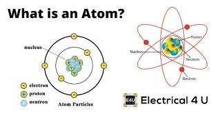

X simbol dari unsur
anomor atom merupakan jumlah proton. Saat netral (tidak bermuatan) akan sama dengan jumlah elektron
Muhamad Agung Tri Mulya, 20 Feb 2026 - 19.45 am

Perhatikan sekeliling kalian, matahari terbit dari timur di pagi hari, bulan muncul pada malam hari, bumi mengelilingi matahari dalam dua belas bulan, dan banyak lagi keteraturan di alam semesta ini. Hebat ya Sang Pencipta kita mengatur alam semesta ini dengan rapi. Bahkan, sampai tingkat paling kecil pun, elektronelektron di alam semesta ini telah diatur dengan rapi menurut bilangan kuantumnya! Wow apa tuh bilangan kuantum?
Elektron-elektron tersebar di sekeliling atom dengan teratur berdasarkan tingkat energinya. Nah, tingkat energi inilah yang digambarkan dengan bilangan kuantum. Artinya, dari bilangan kuantum, lokasi-lokasi penyebaran elektron dapat digambarkan. Sedetail itu loh Sang Pencipta kita mengaturnya. Bayangkan kalau elektron, penyusun segala sesuatu di alam semesta ini, tidak teratur. Alam semesta ini tidak stabil dong. Mana bisa kita hidup di dunia seperti itu. Keren kan?
Salah satu contoh atom di alam semesta ini adalah atom karbon. Atom karbon adalah penyusun dari berbagai benda yang sangat berguna. Mulai dari bensin, plastik, berlian, bahkan tubuh kita pun tersusun dari karbon! Nah, karbon (biasa dilambangkan dengan huruf C) punya 6 elektron. Bagaimana bilangan kuantum dari elektron terakhirnya? Tinggal ikuti deh langkah-langkahnya.
Partikel dasar penyusun atom ada tiga yaitu proton (p), neutron (n) dan elektron
(e). Jadi, massa atom = (massa p + massa n) + massa e.Massa elektron jauh
lebih kecil daripada massa proton dan massa neutron, maka massa elektron dapat
diabaikan. Dengan demikian: massa atom = massa p + massa n.
| Partikel | Lambang | Massa | Muatan | |
|---|---|---|---|---|
| satuan | column | |||
| proton | p | 1.673 x 10-24 | +1 | 1.6 x 10 -19 |
| neutron | n | 1.673 x 10-24 | 0 | 0 |
| elektron | e | 9.109 x 10-28 | -1 | 1.6 x 10 -19 |
X simbol dari unsur
anomor atom merupakan jumlah proton. Saat netral (tidak bermuatan) akan sama dengan jumlah elektron